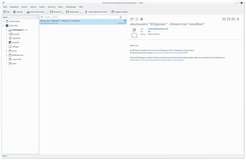
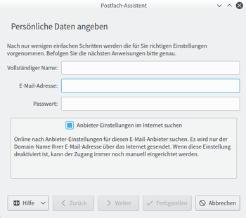
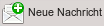
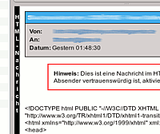
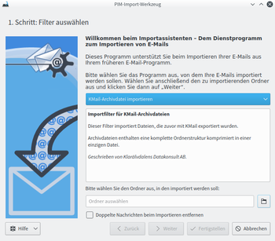

KMail
Dieser Artikel wurde für die folgenden Ubuntu-Versionen getestet:
Ubuntu 16.04 Xenial Xerus
Ubuntu 14.04 Trusty Tahr
Zum Verständnis dieses Artikels sind folgende Seiten hilfreich:
KMail  ist der E-Mail-Client von KDE und ist Teil der PIM-Suite Kontact, kann allerdings auch alleinstehend ausgeführt werden. Zur Verwaltung der E-Mail-Adressen wird das Programm KAddressBook verwendet.
ist der E-Mail-Client von KDE und ist Teil der PIM-Suite Kontact, kann allerdings auch alleinstehend ausgeführt werden. Zur Verwaltung der E-Mail-Adressen wird das Programm KAddressBook verwendet.
KMail unterstützt unter anderem folgende Funktionen:
POP3 und IMAP E-Mail, mit SMTP-Unterstützung
Unterstützt Klartext und sichere Logins
Integration von internationalen Zeichensätzen
Rechtschreibprüfung bei der Eingabe oder auf Wunsch
Vielseitige Versand- und Formatierungsmöglichkeiten
GPG / PGP / S/MIME Signierung und Verschlüsselung
Anzeigen / Erstellen von HTML-formatierten E-Mails
Möglichkeit nur den Klartext einer HTML-formatierten E-Mail anzuzeigen
Einladungen zu Terminen empfangen und akzeptieren
Integration von Anti-Spam-Programmen
Integration von Anti-Viren-Programmen
Umfangreiche Filter-Möglichkeiten
Mächtige Suchfunktion
Im- / Export von E-Mails
Vollkommen eingebunden mit den anderen Kontact-Komponenten
|  |
| KMail als alleinstehendes Programm |
Installation¶
KMail ist bei einer Kubuntu Standardinstallation bereits enthalten und kann ansonsten über die Paketquellen installiert werden. Zur Installation [1] ist folgendes Paket notwendig:
kmail
 mit apturl
mit apturl
Paketliste zum Kopieren:
sudo apt-get install kmail
sudo aptitude install kmail
Anschließend kann KMail im K-Menü unter "Programme → Internet" oder in Kontact unter "E-Mail" gefunden werden.
KMail benötigt zwingend Akonadi, was bei der Installation von KMail automatisch mit installiert wird.
E-Mail-Konto einrichten¶
|  |
| Einrichtungsassistent |
Beim ersten Start von KMail startet ein Einrichtungsassistent, in dem man seinen E-Mail Zugang einrichten kann. KMail bietet über die Option "Anbieter-Einstellungen im Internet suchen" eine automatische Konfiguration an. Hierzu erfolgt im Hintergrund eine Abfrage der entsprechenden Mozilla-Datenbank, die auch in Thunderbird verwendet wird. Anschließend sollte die automatische Konfiguration in den Einstellungen überprüft und ggf. angepasst werden.
Die Zugänge definieren, über welchen Server KMail E-Mails empfangen und verschicken soll (POP3, IMAP, etc.). Unter einer Identität versteht man in KMail eine Kombination von Name, E-Mail-Adresse (bzw. Zugang) und weiteren Einstellungen, wie z.B. E-Mail-Verschlüsselung, Vorlagen, Signaturen, Bilder. Ein Beispiel: Angenommen man besitzt nur eine E-Mail-Adresse, die man für private und geschäftliche Korrespondenzen verwendet. Durch das Anlegen von zwei Identitäten kann man beispielsweise für die geschäftlichen E-Mails eine andere Signatur verwenden, als für private. Verfügt man über mehrere E-Mail-Adressen, ist es sinnvoll, eine Identität pro Adresse einzurichten.
KMail unterstützt alle aktuellen Protokolle, insbesondere:
POP3 - Die E-Mails werden vom Server herunter geladen und lokal auf der eigenen Festplatte abgelegt.
IMAP - Je nach Einstellung bleiben die E-Mail auf dem Server und KMail lädt vorerst nur die Mailheader (Betreff, Absender, Datum...) herunter und lädt die komplette E-Mail bei einem Klick nach oder die E-Mails werden wie bei POP3 auf die lokale Festplatte heruntergeladen und bei Änderungen synchronisiert.
Zusätzlich besteht die Möglichkeit, Nachrichten aus einem lokalen KMail-Mailordner, Maildir-Ordner oder aus einer lokalen MBox-Datei zu laden.
Möchte man nach der ersten Einrichtung erneut eine Identität oder einen Zugang (Empfang / Versand) hinzufügen, wählt man "Einstellungen → KMail einrichten" und  unter "Identitäten" oder "Zugänge" auf die Schaltfläche "Hinzufügen" oder (ab 16.04) Extras → Postfach-Assistent... .
unter "Identitäten" oder "Zugänge" auf die Schaltfläche "Hinzufügen" oder (ab 16.04) Extras → Postfach-Assistent... .
E-Mail erstellen¶
Über die Schaltfläche "Neue Nachricht " in der Werkzeugleiste kann eine neue E-Mail erstellt werden. Hat man manuell eine Nachrichtenvorlage erstellt, kann man diese über das Menü "Datei → Neu → Neue Nachricht von Vorlage → ..." erstellen. Zuerst wählt man die Identität, über die man die Nachricht verschicken möchte. Über die Schaltfläche "Auswählen ..." werden die Empfänger hinzugefügt, zusätzlich kann man über die Dropdown-Liste vor den einzelnen Empfänger-Feldern auswählen, ob der Empfänger eine Kopie bzw. Blindkopie der E-Mail erhalten soll. Nach dem Ausfüllen der Betreffzeile und dem Schreiben der Nachricht, kann man diese über die Schaltfläche "Senden" verschicken. Möchte man die Nachricht später versenden, man auf die Schaltfläche "In Postausgang" und die Nachricht landet im Ordner Postausgang und kann später versendet werden.
Weitere Optionen und Möglichkeiten zur Erstellung von E-Mails (bspw. Rechtschreibprüfung, Signatur, Textbausteine) sind im Artikel KMail/Mailoptionen zu finden.
Digitale Signatur und Verschlüsselung¶
Das Einrichten von Verschlüsselung mittels GnuPG wird im Artikel KMail/Verschlüsselung beschrieben.
Benachrichtigung über neue E-Mails¶
KMail bietet die Möglichkeit über ein ein eigenes Symbol im Systemabschnitt der Kontrollleiste über neue E-Mail Nachrichten informiert zu werden. Dieses benachrichtigt nicht nur über neue E-Mails, sondern kann des Weiteren, durch  auf das Symbol, weitere Aktionen ausführen (manuell nach neuen Nachrichten sehen, Postausgang versenden, eine neue Nachricht erstellen, etc.). Möchte man dieses Symbol angezeigt bekommen, wählt man im Menü "Einstellungen → KMail einrichten ... → Erscheinungsbild" und dort den Reiter "Systemabschnitt in der Kontrollleiste". Man aktiviert die Option "Anzeige im Systemabschnitt in der Kontrollleiste" und kann zusätzlich auswählen, ob das Symbol immer angezeigt werden soll oder nur wenn eine neue Nachricht eingetroffen ist.
auf das Symbol, weitere Aktionen ausführen (manuell nach neuen Nachrichten sehen, Postausgang versenden, eine neue Nachricht erstellen, etc.). Möchte man dieses Symbol angezeigt bekommen, wählt man im Menü "Einstellungen → KMail einrichten ... → Erscheinungsbild" und dort den Reiter "Systemabschnitt in der Kontrollleiste". Man aktiviert die Option "Anzeige im Systemabschnitt in der Kontrollleiste" und kann zusätzlich auswählen, ob das Symbol immer angezeigt werden soll oder nur wenn eine neue Nachricht eingetroffen ist.
Zusätzlich sendet KMail eine Benachrichtigung, sobald eine neue E-Mail eingetroffen ist. Unter Einstellungen → Zugänge → Ausführliche Benachrichtigung bei neuen Nachrichten und die Schaltfläche "Andere Aktionen" lässt sich das Verhalten beeinflussen.
Nachrichten suchen¶
KMail bietet eine Suchfunktion, die über das Textfeld "Suchen..." über dem Nachrichtenfenster. Über das Menü "Bearbeiten → Nachrichten suchen ..." kann zudem die Suchfunktion innerhalb einer Nachricht aufgerufen werden.
HTML E-Mails¶
Standardmäßig werden E-Mails in KMail aus Sicherheitsgründen als reine Textnachrichten nach dem Empfang angezeigt und ebenfalls als reine Textnachrichten beim Schreiben einer neuen Nachricht erstellt. Zusätzlich ist die Anzeige von externen Bildern, die über HTML in eine E-Mail eingebunden werden, in der Voreinstellung deaktiviert. Im Folgenden wird erklärt, wie man HTML-Nachrichten erstellen und anzeigen kann.
Ab Ubuntu 14.04 kann bei HTML Nachrichten der Werbefilter Adblock verwendet werden. Die Einstellungen hierzu finden sich unter "KMail Einrichten ... → Sicherheit → Werbefilter".
HTML-Nachrichten anzeigen¶
Einzelne HTML-Nachricht¶
Wird eine HTML-Nachricht erkannt, wird standardmäßig lediglich der HTML-Code, zusammen mit einer rot umrandeten Hinweismeldung, angezeigt. Möchte man diese E-Mail im HTML-Format anzeigen, man auf den entsprechenden Link in der Meldung. Enthält die Nachricht zusätzlich von externen Quellen eingebundene Bilder, wird, nachdem man die Anzeige der HTML-Nachricht erlaubt hat, eine weitere Hinweismeldung angezeigt, die erneut einen Link enthält, der das Nachladen externer Bilder gestattet.
Zusätzlich kann man sich, zur Markierung von HTML-Nachrichten, eine senkrechte Statusleiste im Nachrichtenfenster am linken Rand einer E-Mail anzeigen lassen. Dies geschieht durch Aktivierung der Option "HTML-Statusleiste anzeigen" im Einrichtungsdialog von KMail "Einstellungen → KMail einrichten → Erscheinungsbild → Nachrichtenfenster". Erhält man nun eine HTML-Nachricht wird die Statusleiste wie rechts im Bild angezeigt. Durch auf diese Leiste, kann man zwischen der Darstellung als reine Textnachricht und als HTML-Nachricht schnell hin und her wechseln.
Alle Nachrichten eines Ordners¶
Möchte man für bestimmte Ordner komplett die Anzeige von HTML-Nachrichten erlauben, markiert man den gewünschten Ordner und wählt im Menü "Ordner → HTML-Ansicht vor Klartext bevorzugen". Nachdem man diese Option gesetzt hat, kann man zusätzlich das nachladen von extern eingebundenen Bilder erlauben ("Ordner → Externe Referenzen laden").
Global Erlaubnis¶
Diese Option ist auf Grund von Sicherheitsrisiken nicht empfohlen! Möchte man dennoch global für alle E-Mails die HTML-Anzeige aktivieren, wählt man im Menü "KMail einrichten → Sicherheit", dort den Reiter "Lesen" und kann nun die Option "HTML-Ansicht vor Klartext bevorzugen" und zusätzlich bei Bedarf "Nachrichten dürfen externe Referenzen aus dem Internet laden" auswählen.
HTML-Nachrichten erstellen¶
Möchte man den Text einer E-Mail mittels HTML formatieren, wählt man im Menü, des Dialogs einer neuen Nachricht, den Eintrag "Optionen → Formatierung (HTML)". Dann stehen grundlegende und aus der Textverarbeitung bekannte Formatierungen wie bspw. Schriftart, -größe oder -farbe zur Auswahl.
E-Mails im/exportieren¶
Importieren¶
|  |
| KMail Importdialog |
Über den Menüeintrag "Datei → Nachrichten importieren" öffnet sich ein Fenster mit einem Assistenten, der einem beim Import von Mails behilflich ist. Die folgenden Dateiformate werden unterstützt:
mbox-Dateien - *.mbox ist ein traditionelles UNIX-Format.
KMail-Archivdateien - Von KMail erstellte Mailarchive (Dateiendung: *.tar, *.zip, *.tar.gz, *.tar.bz2).
E-Mails und Ordnerlisten aus KMail - Man wählt zum Import den Hauptordner, in dem sich die E-Mails (keine mbox-Dateien!) befinden aus.
Evolution 1.x, 2.x, 3.x - Zum Import muss der Hauptordner des Evolution-Mailordners (i.d.R. ~/.evolution/local) ausgewählt werden.
Opera E-Mails - Zum Import muss der Ordner des Opera-Kontos gewählt werden (üblicherweise ~/.opera/mail/store/account).
Sylpheed - Man muss den Basisordner des zu importierenden Sylpheed-Mailordners auswählen (normalerweise ~/Mail).
Thunderbird - Der zu importierende Ordner befindet sich üblicherweise in ~/.thunderbird/*.default/Mail/Local Folders/.
OS X Mail - Importiert E-Mails des in Apple Mac OS X mitgelieferten E-Mail-Clients.
The Bat! - Es können *.tbb-Dateien aus lokalen Ordnern importiert werden, jedoch nicht von IMAP-Zugängen.
Outlook Express Version 4, 5 und 6 - Die E-Mails wurden von Outlook Express im Format *.dbx oder *.mbx gespeichert.
Pegasus Mail - Zum Import wählt man den Mailordner von Pegasus Mail aus (er enthält *.cnm-, *.pmm- und *.mbx-Dateien).
Lotus-Notes-Mails - Unterstützt werden Strukturtext-Dateien, die aus dem Lotus-Notes-Client exportiert wurden.
Einfache Textdateien - Man wählt den Ordner, der die E-Mails enthält. Unterstützt werden E-Mails im Format *.msg, *.eml und *.txt.
Exportieren¶
Möchte man einen kompletten Ordner, inklusive eventuell vorhandener Unterordner (die Ordnerstruktur bleibt erhalten) exportieren bzw. archivieren, wählt man im Menü "Ordner → Ordner archivieren ...". Durch auf das Ordner-Symbol in der obersten Zeile, öffnet sich ein Fenster, das alle verfügbaren Ordner auflistet. Dort markiert man den Ordner, den man exportieren möchte und auf "OK". Als nächstes sucht man sich das gewünschte Archivformat (*.zip, *.tar, *.tar.bz2, *.tar.gz), in dem die Nachrichten gespeichert werden sollen, aus. Danach gibt man in der dritten Zeile den Namen und Speicherort des Archivs ein und kann bei Bedarf die Option "Ordner nach Abschluss löschen" auswählen. Zum Abschluss man auf "OK" und der Ordner wird exportiert.
KMail bietet ebenfalls die Möglichkeit einzelne E-Mail zu exportieren. Hierzu markiert die gewünschte E-Mail und wählt "Datei → Speichern unter ...".
Außerdem kann man in KMail einen automatischen Export (Archivierung, Datensicherung) der E-Mails durchführen. Dazu "Einstellungen → Automatische Archivierung einrichten ..." auswählen. Im nächsten Fenster auf "Hinzufügen" klicken. Nun muss nur noch der zu exportierende KMail-Ordner festgelegt werden (für sämtliche E-Mails in KMail ist das normalerweise der Ordner "Lokale Ordner") und der Pfad für das automatisch zu erstellende Archiv ausgewählt werden. Standardmäßig erstellt KMail nun im festgelegten Rhythmus (der kleinste Wert ist einmal pro Tag) ein BZ2-komprimiertes Tar-Archiv des zu exportierenden Ordners am ausgewählten Speicherort.
Backup¶
Möchte man ein Backup aller E-Mailkonten, E-Mails und von sämtlichen persönlichen Einstellungen (z.B. Zugänge, Filter, etc.) von KMail sichern, so findet man im KDE UserBase Wiki  die weiterführenden Informationen.
die weiterführenden Informationen.
Einstellungen¶
Über den Menüeintrag "Einstellungen → KMail einrichten" wird der Einrichtungsdialog angezeigt. In der folgenden Tabelle wird aufgeführt, wo die wichtigsten Einstellungen zu finden sind.
| Einstellungen zu: | findet man hier: |
| Anhang-Darstellung | Menü "Ansicht → Anhänge" |
| Darstellung einer E-Mail in der Liste | Einrichtungsdialog "Erscheinungsbild → Nachrichtenliste" (Dropdown-Liste "Standard-Design") |
| E-Mail Vorlagen | Einrichtungsdialog "E-Mail-Editor → Standard / Eigene Vorlagen" |
| Ein- und Ausgangspostfach | Einrichtungsdialog "Zugänge" |
| Farbgestaltung | Einrichtungsdialog "Erscheinungsbild → Farben" |
| Gruppierung von E-Mails | Einrichtungsdialog "Erscheinungsbild → Nachrichtenliste" (Dropdown-Liste "Standard-Zusammenstellung") |
| Identitäten verwalten | Einrichtungsdialog "Identitäten" |
| Ordnerliste | Einrichtungsdialog "Erscheinungsbild → Layout" |
| Nachrichtenliste | Einrichtungsdialog "Erscheinungsbild → Nachrichtenliste" |
| Nachrichtenmarkierung | Einrichtungsdialog "Erscheinungsbild → Nachrichten-Markierungen" |
| Nachrichtenvorschau | Einrichtungsdialog "Erscheinungsbild → Layout" |
| Rechtschreibung | Artikel KMail/Mailoptionen |
| Schriftdarstellung | Einrichtungsdialog "Erscheinungsbild → Schriftarten" |
| Signatur | Artikel KMail/Mailoptionen |
| Textbausteine | Artikel KMail/Mailoptionen |
| Verschlüsselung | Artikel KMail/Verschlüsselung |
| X-Face | Artikel KMail/Mailoptionen |
| Zeichensatz (E-Mail lesen) | Einrichtungsdialog "Erscheinungsbild → Nachrichtenfenster" |
| Zeichensatz (E-Mail versenden) | Einrichtungsdialog "E-Mail-Editor → Zeichensatz" |
Links¶
Wiki¶
KMail/Mailoptionen - E-Mail-Formatierung, Rechtschreibprüfung, Signatur, X-Faces, Textbausteine, etc.
KMail/Virenscanner - Virenscanner einrichten
KMail/Filter - Nachrichten-, POP- und Spamfilter einrichten
KMail/Verschlüsselung - Einrichtung einer digitalen Signatur und E-Mail-Verschlüsselung
- Erstellt mit Inyoka
-
 2004 – 2017 ubuntuusers.de • Einige Rechte vorbehalten
2004 – 2017 ubuntuusers.de • Einige Rechte vorbehalten
Lizenz • Kontakt • Datenschutz • Impressum • Serverstatus -
Serverhousing gespendet von